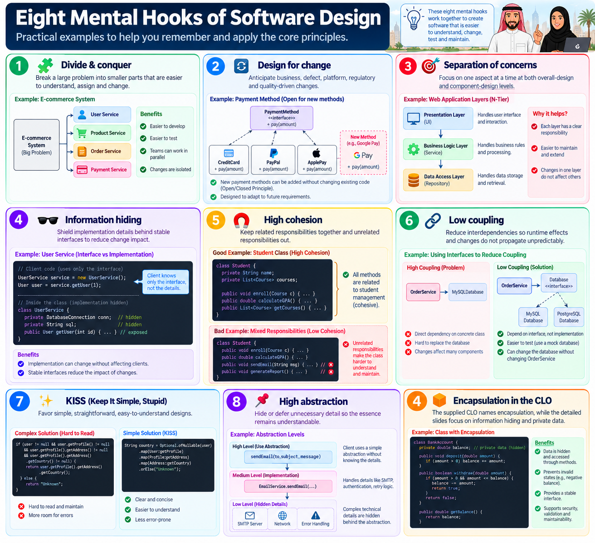
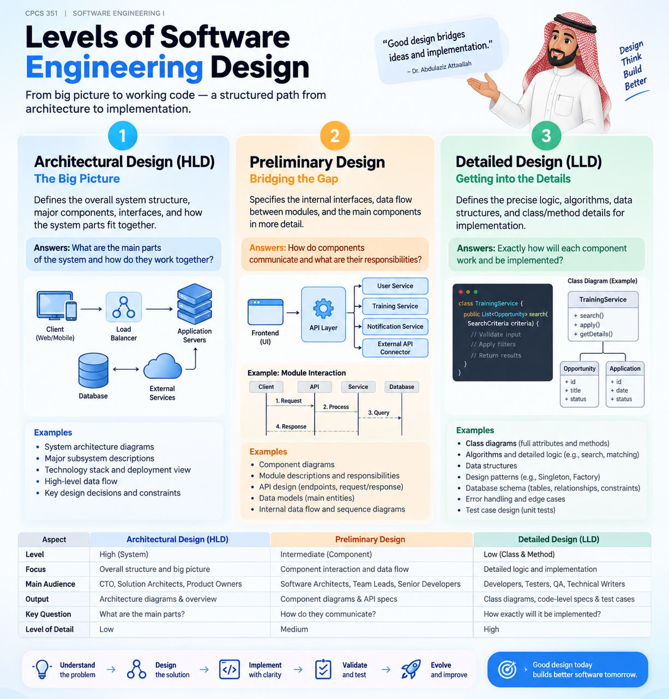

Core Software Design Principles
Good design controls complexity and change: divide the problem, separate concerns, hide details, keep responsibilities cohesive, and reduce dependencies.
Explain the design process and apply divide-and-conquer, design for change, separation of concerns, information hiding, high cohesion, low coupling, KISS and abstraction.
Problem solving under constraints
Implement what the system must do.
Respect non-functional requirements.
Work within resource constraints.
Adhere to principles of good design.
Describe a feasible way to build it.
The lecture distinguishes architecture design, class design, user-interface design, algorithm design and protocol design as different aspects of design.
Eight mental hooks

Inside the module vs between modules
🧲 High cohesion
Question: Do the functions inside this module belong together?
Types listed in the source: functional, layer, communicational, sequential, procedural, temporal and utility.
🔗 Low coupling
Question: How strongly does this module depend on other modules?
Types listed: content, common, control, stamp, data, routine call, type use, inclusion/import and external.
Low cohesion + high coupling
✕ Everything module
Unrelated use cases or methods are grouped together, while many external dependencies leak into the module.
✓ Focused module
Responsibilities are related, interfaces are stable, implementation details are hidden and dependencies are controlled.
Decomposition can continue recursively
May divide into clients/servers or subsystems.
Can divide into packages.
Divides into classes.
Divides into methods.
Keep each level understandable and changeable.
Cohesion pulls related things together. Coupling measures what ties modules to each other. Information hiding protects the boundary.

Visual Learning · InfographicLevels of Software Engineering DesignConnect high-level architecture, preliminary design, and detailed design as the solution moves toward implementation.
Open full infographic ↗